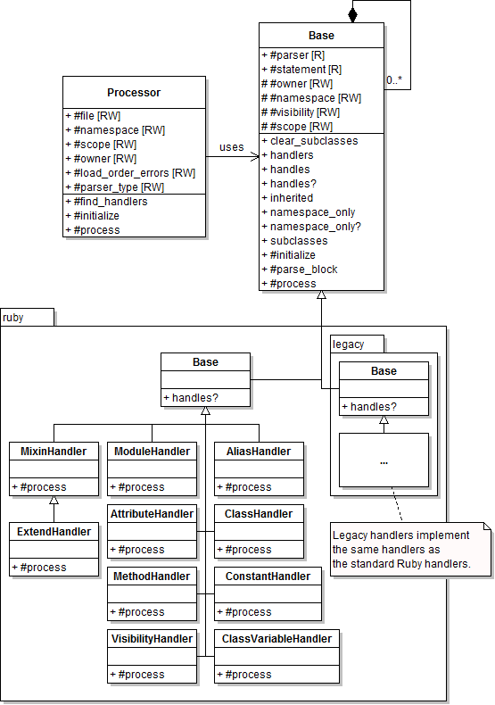

Handlers Architecture
Handlers allow the processing of parsed source code. Handling is done after parsing to abstract away the implementation details of lexical and semantic analysis on source and to only deal with the logic regarding recognizing source statements as code objects.

The Pipeline
After the parser component finishes analyzing the
source, it is handed off for post-processing to the ::YARD::Handlers::Processor
class, which is responsible for traversing the set of statements given by
the parser and delegating them to matching handlers. Handlers match when the
YARD::Handlers::Base.handles? method returns true for a given statement.
The handler can then perform any action after being invoked by the process
method.
The Processor Class
The main purpose of the processor, as mentioned above, is to traverse through the list of statements given to it by the parser. The processor also keeps state about what is being processed. For instance, the processor is what keeps track of the current namespace (the module or class an object is being defined in), scope (class or instance), file and owner. The owner refers to the object that is most directly responsible for the source statement being processed. This is most often the same as the namespace, except when parsing the body of a method, where the namespace would be the class/module the method is defined in and the owner would be the method object itself.
Implementing a Handler
This section covers the basics of implementing a new-style Ruby handler. For details on implementing a legacy handler, see the "API Differences" section below.
a Ruby handler can be implemented simply by subclassing the ::YARD::Handlers::Ruby::Base
class and declaring what node types or source to process with the handles
class method. A very simple handler that handles a module definition would be:
class MyModuleHandler < YARD::Handlers::Ruby::Base
handles :module
def process
puts "Handling a module named #{statement[0].source}"
end
endFor details on what nodes are, and what node types are, see the parser architecture document.
In this case the node type being handled is the :module type. More than one
node type or handles declarations may describe a single handler, for instance,
a handler that handles class definitions should handle the :class and :sclass
node types respectively (the latter refers to classes defined as class << Something).
The statement attribute refers to the current
node (or statement) that is being handled by the handler.
Handling a Method Call
In some cases, a developer might need to handle a method call. The parser can
express a method call in many AST forms, so to simplify this process, a method
call can be handled by declaring the following in a handles statement:
class MyHandler < YARD::Handlers::Ruby::Base
handles method_call(:describe)
def process
# Process the method call
end
endIn this case we handle any of the method calls to method name describe with
the following syntaxes:
describe(something)
describe arg1, arg2, arg3
describe(something) { perform_a_block }
describe "Something" do
a_block
endCreating a new Code Object
Usually (but not always) handling is performed to create new code objects to add
to the registry (for information about code objects, see this document).
Code objects should simply be created and added to the existing namespace. This
will be enough to add them to the registry. There is also a convenience
register method which quickly sets standard attributed
on the newly created object, such as the file, line, source and docstring of the
object. This method will be seen in the next example.
Handling an Inner Block
By default, the parser gives the processor class a list of all the top level statements and the processor parses only those top level statements. If an inner block of a module, class, method declaration or even a block passed to a method call needs to be handled, the parse_block method must be called on the list of statements to parse. This will send the list to the processor to continue processing on that statement list. The source tree can be selectively parsed in this manner by parsing only the inner blocks that are relevant to documentation.
For example, the module handler parses the inner body of a module by performing the following commands:
class YARD::Handlers::Ruby::ModuleHandler < YARD::Handlers::Ruby::Base
handles :module
def process
modname = statement[0].source
mod = register ModuleObject.new(namespace, modname)
parse_block(statement[1], :namespace => mod)
end
endIn this case statement[1] refers to a list of extra statements, the block we
wish to parse. Note here that when parsing objects like modules and classes,
we set the namespace for the duration of the block parsing by setting options
on the parse_block method.
API Differences for Legacy Handler
Because the legacy handler uses the legacy parser and therefore a different kind
of AST, there are subtle differences in the handler API. Most importantly, the
handles method usually deals with either lexical tokens or source code as a string
or RegExp object. The statement object, similarly, is made up of lexical tokens instead
of semantically parsed nodes (this is described in the parser document).
The module example above can be rewritten as a legacy handler as follows:
class YARD::Handlers::Ruby::Legacy::ModuleHandler < YARD::Handlers::Ruby::Legacy::Base
handles TkMODULE
def process
modname = statement.tokens.to_s[/^module\s+(#{NAMESPACEMATCH})/, 1]
mod = register ModuleObject.new(namespace, modname)
parse_block(:namespace => mod)
end
endA few notes on the differences:
- We inherit from
Legacy::Baseinstead of the standard Ruby Base handler class. - We exchange node type
:moduleforTkMODULE, which represents the first token in the statement. - We perform direct string manipulation to get the module name.
parse_blockdoes not take a list of statements. In the old parser API, each statement has ablockattribute which defines the list of statements within that statement, if any. Therefore,parse_blockwill always parse thestatement.blockif it exists.